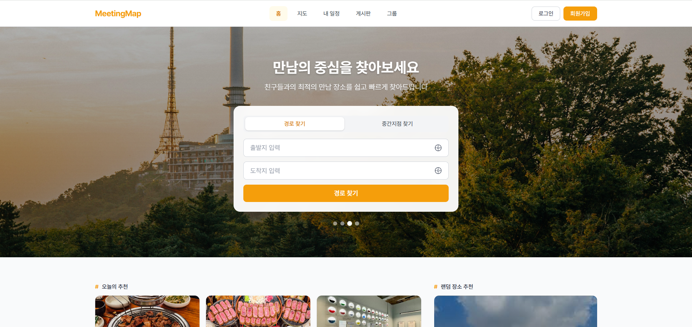
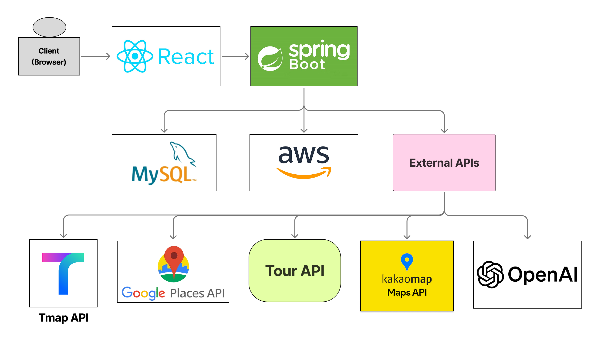
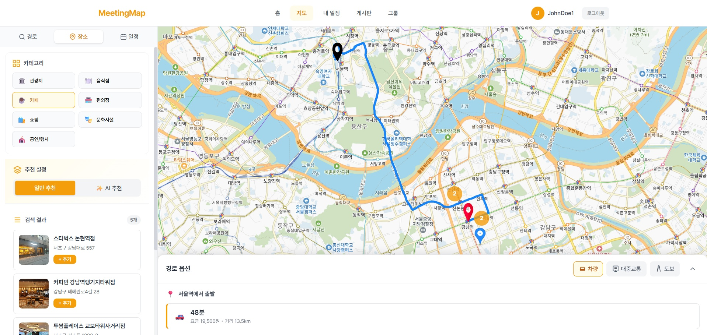
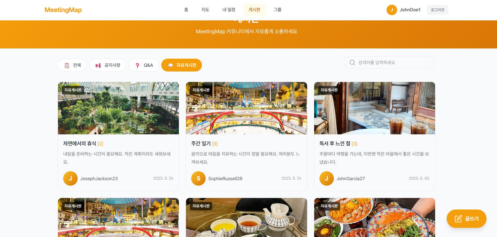

MeetingMap
여러 출발지의 중간지점 기반으로 장소 추천부터 일정 생성·공유까지 한 번에 해결하는 모임 스케줄링 서비스. 한성대학교 캡스톤 디자인 4인 팀 프로젝트로, 백엔드를 담당했습니다.
01Overview
"친구들이랑 어디서 만나지?" 를 해결하는 서비스입니다. 여러 사람의 출발지를 입력하면 최적의 중간 지점을 자동으로 찾아주고, 주변 맛집·카페·관광지를 추천합니다.
추천받은 장소로 AI가 하루 일정을 자동 생성하거나, 직접 커스터마이징하여 스케줄을 만들 수 있습니다. 친구·그룹 기능과 게시판으로 모임 후기까지 공유합니다.

02Architecture

| Layer | Stack | Notes |
|---|---|---|
| Backend | Java · Spring Boot · Spring Security | JWT · OAuth · @Transactional 정합성. |
| DB | MySQL | 게시판 목록 조회용 View 별도 운영. |
| Frontend | React | SPA · 지도 인터랙션. |
| Infra | AWS | EC2 · S3. |
| External | Kakao · Tmap · Google · Tour · OpenAI | 지도 · 장소 · 경로 · AI 일정. |
03Features


- 중간지점 계산
- 최대 4개 출발지를 입력하면 중간 지점을 자동 계산합니다. 장소명 자동완성, 현재 위치 기반 검색, 출발지-도착지 검색 등 다양한 입력 방식을 지원합니다.
- 경로 탐색
- TMap API로 도보·자동차·대중교통 3가지 이동 수단의 길찾기를 지원합니다. 출발지에서 중간지점까지의 경로와 예상 소요 시간을 지도 위에 표시합니다.
- 장소 추천
- 주변 장소를 카테고리별(관광지·음식점·카페·숙박)로 필터링합니다. Tour API와 Google Places API 데이터를 통합하여 평점·리뷰 등 풍부한 정보를 제공합니다.
- AI 스케줄 추천
- OpenAI API로 테마에 맞는 장소를 추천받고, 현재 위치에서 가장 가까운 장소를 순차 선택하여 최적 방문 순서를 계산합니다. 식사 시간대 자동 배치와 이동 수단별 소요 시간을 반영합니다.
- 커뮤니티 게시판
- 카테고리별 게시판에서 모임 후기를 공유합니다. 이미지 첨부, 좋아요/싫어요/스크랩, 댓글 기능을 지원합니다.
- 그룹 · 친구
- 그룹을 생성하고 친구를 초대하여 스케줄을 공유할 수 있습니다. 친구 요청·수락 기반 소셜 기능과 그룹 전용 게시판을 제공합니다.
- 소셜 로그인
- JWT 기반 인증과 카카오 OAuth 2.0 소셜 로그인을 지원합니다. HTTP-Only 쿠키로 토큰을 관리합니다.
04Responsibilities
- · 인증 / 보안 — JWT 토큰 발급·검증, 카카오 OAuth 2.0 소셜 로그인, HTTP-Only 쿠키 기반 토큰 관리, Spring Security 설정.
- · 게시판 — 게시글 CRUD + AWS S3 이미지 업로드, 좋아요/싫어요·스크랩, 댓글 CRUD.
- · 그룹 — 그룹 생성·관리, 친구만 초대 가능, 그룹 전용 게시판·스케줄 공유.
-
·
친구 — 요청·수락·거절 양방향 레코드 관리,
@Transactional기반 데이터 정합성 보장.
05Troubleshooting
상황. 게시글 삭제 시 FK 제약조건 위반 에러가 발생하여 삭제가 실패했습니다. 댓글·좋아요·파일 등 연관 데이터가 게시글을 참조하고 있었습니다.
원인. Comment는 Board와 별도 도메인으로 분리되어
cascade 설정이 없었고, 의도치 않은
삭제를 방지하기 위해 cascade 대신 명시적 삭제 방식을 선택했습니다.
해결. 서비스 레이어에서 이미지 파일 → 댓글 → 게시글 순으로 삭제 순서를 직접 관리했습니다. cascade 없이 명시적으로 처리하여 의도하지 않은 연쇄 삭제를 방지했습니다.
상황. 게시글 목록에서 좋아요 수·댓글 수·작성자 닉네임·썸네일 등을 표시해야 했습니다. Board 엔티티로 조회하면 매 게시글마다 여러 테이블을 조회하는 N+1 문제가 발생했습니다.
원인. 좋아요/싫어요/댓글/파일/사용자 테이블에 각각 서브쿼리나 JOIN이 필요했고, 목록 조회와 상세 조회에서 필요한 데이터 구조가 달랐습니다.
해결. 목록 조회용 DB View를 생성하여 필요한 데이터를 한 번의 쿼리로 가져오도록 개선했습니다. View를 읽기 전용으로 매핑하고, 기존 테이블과 충돌하지 않도록 설정을 조정했습니다.
06Tech stack
| Layer | Tools |
|---|---|
| Backend | Java · Spring Boot · Spring Security · MySQL |
| Frontend | React |
| Infra | AWS · S3 |
| External APIs | Kakao · Tmap · Google Places · Tour · OpenAI |